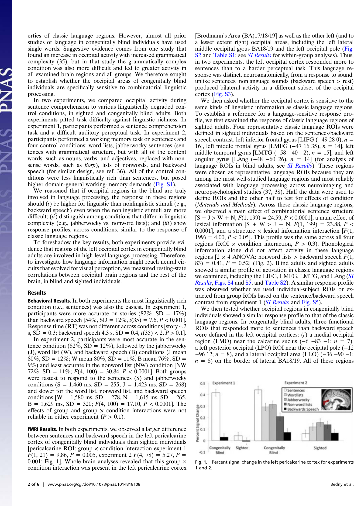
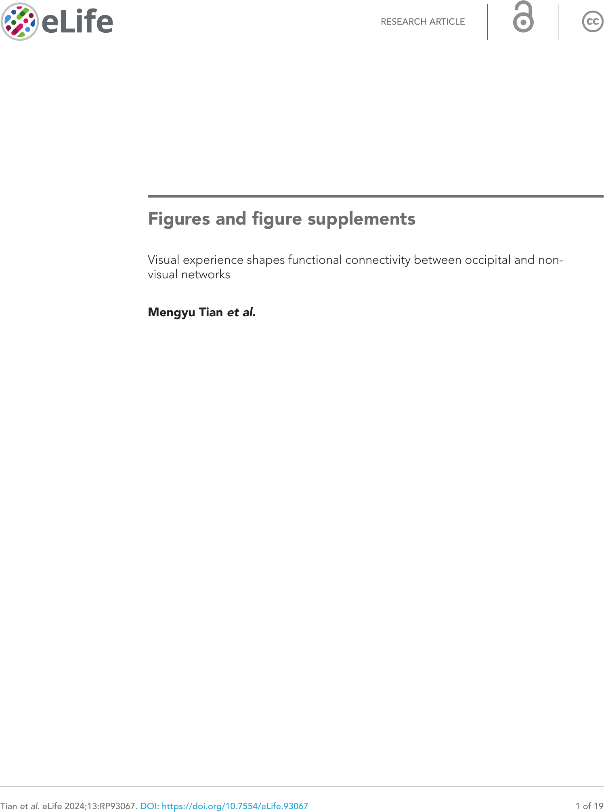
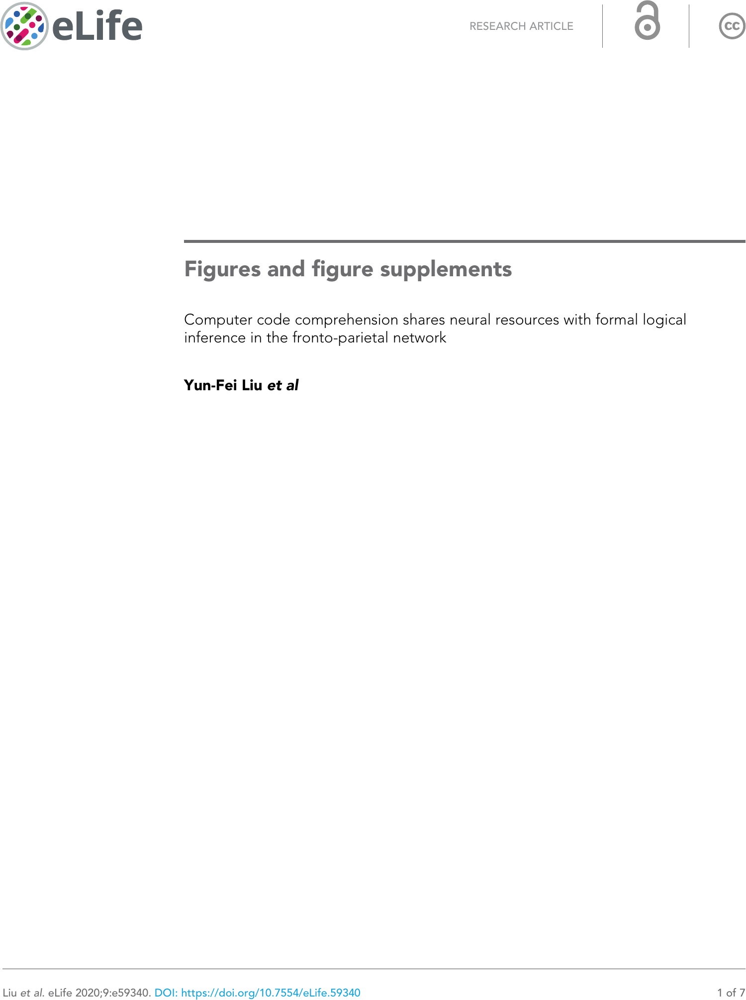
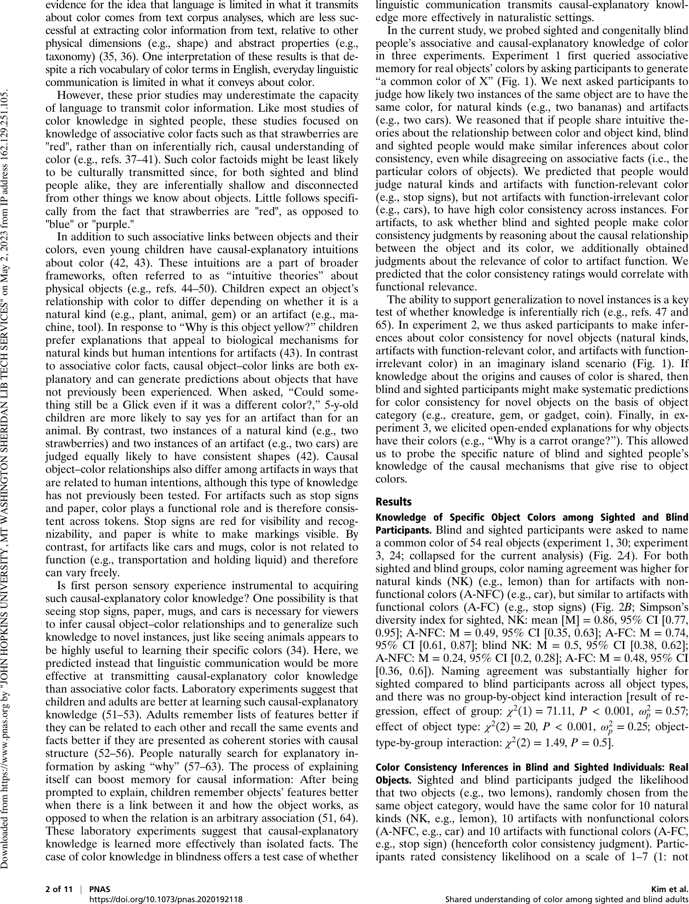
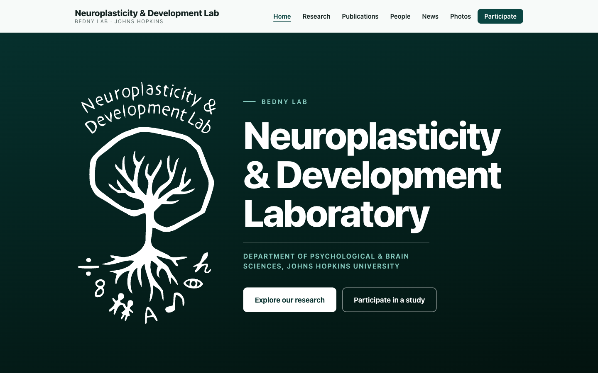
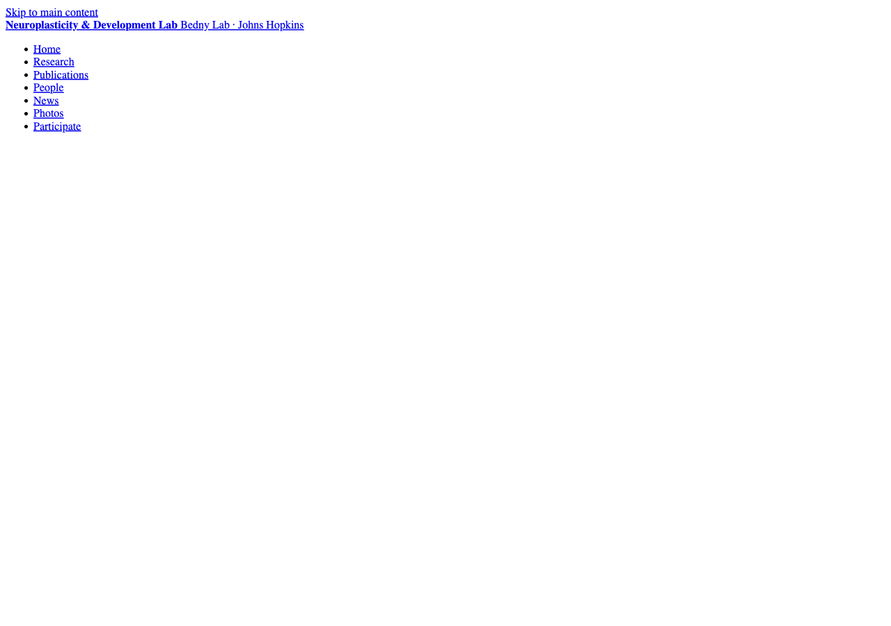

Image & figure reference
Visual inventory for choosing photos and research figures during redesign. Not linked from the public site.
hero-fx-test.html, fx-*.png) that are not in the repo now.
Lab social photos live on photos.html (2014–2019). This page collects
research figures, logos, maps, and dev screenshots in one place.
Research figures & diagrams
Scientific figures in images/. “On site” = used on the live home or research pages today.

Visual_Cortex.jpgMath/language in “visual” cortex
On site

MDS.pngBlind vs sighted word maps
On site

brains.jpgMRI activation on inflated brains
Unused

brains.jpegSame subject (JPEG variant)
Unused

BSYN_LB_Fig.jpgPublication figure
Unused

BSYN_LB_Fig.pngPublication figure (PNG)
Unused

BSYN_LB_Fig_updated051619.jpgUpdated publication figure
Unused

sight_verbs.pngVision-related verbs
Unused

sight_verbs_all.pngFull sight-verbs map
Unused

sigh_verbs_2_blind.pngBlind group verbs (typo in filename)
Unused

Lindsay_brain_photo.jpgTMS session (Judy & Marina)
On site

Lindsay_brain_photo.pngSame photo (large PNG)
Unused

marina_judy_tms.jpgTMS lab photo (alternate)
Unused

Simple_Bedny_Banner.jpgLab banner graphic
Unused

Simple_Bedny_Banner.pngLab banner (PNG)
Unused
Logos & branding
Lab logo variants added during the recent redesign.

bednylab_logo.svgTree/brain logo (vector)
On site — hero
bednylab_logo_transparent.pngTransparent background
Unused
bednylab_logo_white.pngWhite version for dark backgrounds
Unused
bednylab_logo.jpgOriginal raster logo
Unused
Maps
Used on the contact page.

map_ames.jpgAmes Hall location
On site — contact

map_ames.pngAmes Hall (PNG)
Unused

map_kki.jpgKKI scanner location
On site — contact

map_kki.pngKKI (PNG)
Unused
Paper figures (Bedny first / last author)
103 figures from 18 papers — extracted from lab PDFs and open-access eLife figure files.
Browse the full gallery on paper-figures.html.
Metadata in images/paper-figures/manifest.json.




Lab life photos
Social/event photos are on photos.html — jump to a year:
2019 · 2018 · 2017 · 2016 · 2015 · 2014
People portraits (~50+) live in images/people/ and appear on people.html.
News outlet logos live in images/news/ and appear on news.html.
Dev screenshots (project root)
Layout checks from recent editing — not part of the published site.

hero-after.pngHero after column-width tweak
Dev only

hero-check.pngHero layout check (CSS not loaded)
Dev only